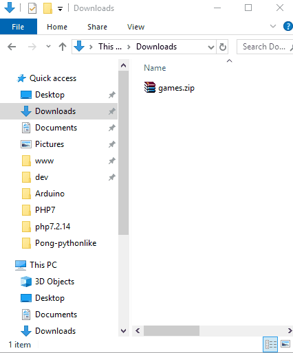

Installation and prerequisites
Step 0
To start learning Python on Gamebuino, you don't need much: a Gamebuino with CircuitPython installed, as well as the Mu code editor!
CircuitPython
CircuitPython is the program that will allow you to execute Python code on your Gamebuino. To install it, proceed in the same way as to install a game.
1.Download the zip file. 2.Extract the archive. It must contain a folder named "CircuitPython". 3.Copy-paste that folder to the root of the Gamebuino's SD card. 
And that's it ! Your Gamebuino is now ready to read some Python code !
For more informations about CircuitPython for Gamebuino, go to the creation page.
Mu
To code in Python, you can use any text editor you want. However, in this workshop, we recommend that you use Mu. In addition to being very simple to get started, it will also help us to display errors.
- Go to Mu's website and download the software in the desired version](https://codewith.mu/en/download)
- Install the software according to the instructions
Windows / Mac
- Go to Mu's website and download the software in the desired version.
- Just double-click on the file you just downloaded and follow the procedure. In case of any doubt, you can follow the detailed guide for Windows, or for Mac.
Linux
It turned out the installation of Mu-editor is quite complicated on most of Linux distributions. For Arch-Linux the package is distributed in the official user repository. So you just have to install it with your usual package manager. For the other distributions (Ubuntu, Mint, Debian or any other Debian based distribution), we propose you a very simple alternative :
One of the major advantage of the code editor Mu, is two allow the display of the messages sent by CricuitPython thru the serial port. So typically, if there is an error in your code blocking the execution on the machine, CircuitPython will return the error description and the number of the line where the error occured.
On Linux, it is very easy to display the trafic on the serial port on a simple command terminal.
- To write your code, you can choose any text-editor. Preferably pick one provided for programming languages, it will help you for coloration, formatting, etc. For example Atom, Brackets, SublimeText,... But it doesn't really matter.
- When you are done writing your code, you juste have to do a "save as" and save your file as "code.py" on the CIRCUITPY volume the same way we do it with Mu-editor in the next page of this tutorial. (You can also save your file anywhere you want, then manually copy it ito the CIRCUITPY folder)
- In order to display the serial monitor, you first have to identify the name of the port your Gamebuino is wired on. So connect your GB, launch CircuitPython (see next page of this tutorial if youre not sure), then open a command terminal and type :
dmesg | grep ttyThe result of the command should display a list of all available ports. - The command we are going to use to display the output of the port we selected is
screen. - Check if you have the package "screen" installed with the command
screen -v. - If the command is not found, you have to install the package with
sudo apt install screen. - Now you just have to type
screen /dev/ttyACM0 115200(replacing ttyACM0 by the port's name you identified for your Gamebuino if it's different), and the output of the serial port will show up. So from now on if there is an error if the code, it will be displayed in this terminal :).
You're all set to get started !
There you go!
Everything is ready for you to start learning Python with your Gamebuino. Let's do it!